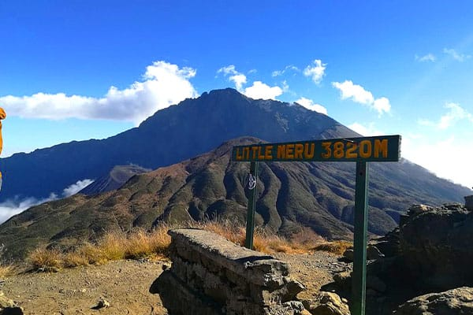

This is a very special tour that allows you to concentrate most of your time in the Serengeti, to follow the unique spectacle that is the Great Migration. You will be able to spend at least 5 nights in the park, usually two in the Central Area (with the largest concentration of big cats) and the other three at Northern Serengeti National Park where the Migration is according to the time of the year.
We have designed this particular tour so that you have the chance to witness The wildebeest migration river crossing which begins from July as the wildebeest herds move North and passing through the Lobo, Wagakuria and Nyamalumbwa plains heading to Masai Mara Game Reserve and In October, the herds move south towards the central Serengeti National Park via the Lobo area of the Serengeti National Park.
Karibu Tanzania "Welcome to Tanzania". Upon arrival at the airport, you will be met by our Safari Guide, who will give you a short briefing of Your upcoming Adventure.
After breakfast we drive to Tarangire National Park for the game drive with parked lunch box. Ranking as the 6th largest National Park in Tanzania and covering an area of 2,600 square kilometers. The Tarangire National Park is most popular for its large elephant herds and mini-wildlife migration. After an extensive game drive, head to the camp for sundowners and to enjoy the views over the Tarangire river & Acacia woodlands plains.
After breakfast at the lodge, we drive with picnic lunchbox to Lake Manyara National Park. The park covers 330 sq. km, 70% of which is occupied by the lake. The varied ecosystem consists of ground water forests, acacia woodland and open grassland along the lake shore and sustains a wealth of wildlife, including pink flamingoes, baboons, elephant, Giraffes and buffalos. The park is famous for the elusive tree-climbing lions.
After early breakfast at the lodge, we depart for a morning game drive inside the Ngorongoro Crater with picnic lunchbox. You can expect to see lions, elephants, zebras, hippos, flamingos, jackals, rhinos, antelopes, and various species of birds. After lunch in the Ngorongoro crater we drive to the Serengeti for dinner and overnight.
After breakfast, Enjoy a full day game drive in the Seronera area exploring a great range of various habitats such as swamps, woodland, soda lakes and the world famous Serengeti short grass plains. You will witness herds of wildebeest and zebras especially during a short time-frame from around February to march where majority of the wildebeest calve.
After breakfast we will proceed for a full day game drive viewing the great migration at Mara area. Resident wildlife numbers are exceptionally high in the Wagakuria area. The key feature is the Mara River and there is a great chance to see the herds cross the Mara River to the north on one day and back south a few days later. Please note that it can be very difficult to witness crossing and is sometimes a matter of luck.
After breakfast we will proceed for a full day game drive viewing the great migration at Mara area. Resident wildlife numbers are exceptionally high in the Wagakuria area. The key feature is the Mara River and there is a great chance to see the herds cross the Mara River.
Serengeti National Park is a World Heritage Site teeming with wildlife: over 2 million ungulates, 4000 lions, 1000 leopard, 550 cheetahs and some 500 bird species inhabit an area close to 15,000 square kilometers in size. Join us on a safari and explore the endless Serengeti plains dotted with trees and Kopjes from which majestic lions control their kingdom.
After breakfast, Enjoy the last morning game drive at north Serengeti on the way to Kogatende airstrip for your flight back to Arusha. Upon arrival in Arusha, we will take you to Kilimanjaro International Airport for your flight back home.
We are committed in providing excellent services to all of our tours to our quest. We have more than 15 years of excellency operation in Wildlife Safaris.